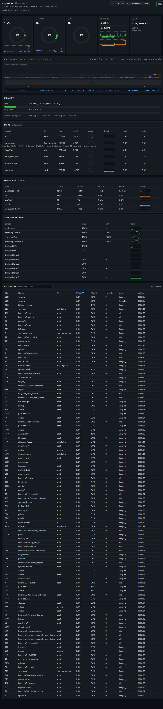

Terminal CLI
- Sections:
cpu,mem,procs,disks,net,temp— or the full overview --watchlive refresh,--jsonmachine-readable output- Sortable process table (
--sort cpu|mem…),--top N - Color modes
auto|always|never, unitsiec|si|bytes
v0.1.2 · one static binary · zero runtime deps
sysview is a portable, one-shot system stats viewer for Windows, Linux and macOS. The same tiny binary gives you a fast CLI overview, a live dark-mode web dashboard, and Prometheus metrics — with no runtime, no framework and no installer.

sysview serve, one self-contained page, nothing to install.01 — Features
The serve command hosts the dashboard and
/metrics; the remaining commands render directly to your
terminal. Both share the same sampler, so numbers always agree.
cpu, mem, procs, disks, net, temp — or the full overview--watch live refresh, --json machine-readable output--sort cpu|mem…), --top Nauto|always|never, units iec|si|bytes/metrics on the same port — Prometheus text 0.0.402 — Quick start
Download the binary for your OS from
Releases.
Verify against the SHA256SUMS on the release page, then run — that’s it.
# download sysview-windows-x86_64.exe, then in a terminal:
PS> .\sysview-windows-x86_64.exe # full overview
PS> .\sysview-windows-x86_64.exe procs --top 20 # top processes by CPU
PS> .\sysview-windows-x86_64.exe serve # dashboard on :8080Bind beyond loopback and the startup banner prints the ready-to-open URL with your token — just scan or type it on any phone, tablet or TV in the network.
$ sysview serve --bind 0.0.0.0 --port 8080 --token "$SECRET"
# open on any device: http://<server-ip>:8080/?token=$SECRET03 — Security
serve binds 127.0.0.1 unless you explicitly
pass --bind 0.0.0.0. Nothing is reachable off-box by accident.
Set --token and every route (/,
/api/snapshot, /metrics) returns
401 without it. Token never appears in logs.
DynamicUser, ProtectSystem=strict,
NoNewPrivileges, private /tmp —
and Restart=always with MemoryMax=256M.
For HTTPS in front of a LAN deployment, put it behind a reverse proxy (nginx / Caddy). The service listens on one port and speaks plain HTTP — the same story as any self-hosted app.
04 — Deploy 24×7
The bundled installer targets Debian-family servers. It copies the binary, writes a hardened systemd unit, and prints the enabled at boot check when done.
$ sudo BIND=0.0.0.0 PORT=8080 INTERVAL=1 MAX_PROCS=100 \
bash setup-debian.sh ./sysview-linux-x86_64-musl
# systemctl is-enabled sysview → enabled
# the startup banner prints: http://192.168.100.114:8080/?token=●●●●WantedBy=multi-user.target)Restart=always)/etc/sysview/sudo ufw allow 8080/tcpsudo journalctl -u sysview -f05 — Prometheus
/metrics, scraped straight from the snapshotEvery metric is a gauge decoded from the same cached
snapshot the dashboard serves — no extra allocations while idle.
Point Prometheus at http://host:8080/metrics?token=●●●●.
sysview_uptime_secondssysview_load1 / 5 / 15sysview_ts_secondssysview_cpu_usage_percentsysview_cpu_logical_coressysview_memory_*_bytessysview_memory_used_percentsysview_swap_total / used_bytessysview_disk_*_bytes{mount=...}sysview_disk_used_percent{mount=...}sysview_disk_read / write_bpssysview_net_rx / tx_bps{interface=...}sysview_net_received / transmitted_bytes_totalsysview_processessysview_sensor_temperature_celsius{sensor=...}# a real excerpt from a live headless box:
# HELP sysview_cpu_usage_percent Total CPU usage in percent.
# TYPE sysview_cpu_usage_percent gauge
sysview_cpu_usage_percent 1.0
sysview_memory_used_bytes 631320576
sysview_disk_used_percent{mount="/"} 7.16
sysview_net_rx_bps{interface="wlx3460f9f543f9"} 6565
sysview_sensor_temperature_celsius{sensor="thinkpad CPU"} 42
sysview_processes 13706 — FAQ
No. It’s one self-contained static binary per platform.
Download, chmod +x (on Unix), run. No Node, no Python,
no system packages, nothing to configure.
The dashboard binds loopback by default and only listens on
0.0.0.0 when you ask it to. Set a token and every
route is 401 without it. The startup banner prints the
ready-to-open URL with your token so you never type it by hand.
Lock the port in your firewall to keep it LAN-only.
Around 2–4 MB private RSS at idle on a headless Debian 13 server, and the sampler pauses after 30 seconds with no viewer. It never retains command lines or environments between snapshots, so long-running instances don’t grow. The systemd unit adds a 256 MB ceiling as a hard cap.
Yes. The systemd unit is installed enabled with
WantedBy=multi-user.target and
Restart=always — it starts after the network is
online and revives within seconds of any crash, including
kill -9.
Yes — /metrics on the same port, Prometheus
text 0.0.4, token-protected, decoded from the already-cached
snapshot with zero per-poll allocations.
Put a reverse proxy (nginx, Caddy) in front of it for TLS. The service listens on a single port and speaks plain HTTP, like any other self-hosted tool — your proxy adds the certificate.